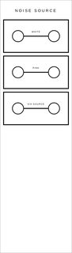
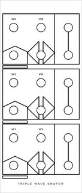
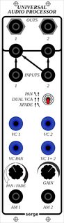
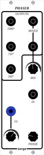
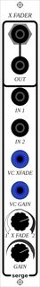

Parts & BOMs
Every module has a BOM spreadsheet covering each way to build it, plus the panel hardware. For boards we've worked through line by line, there is also a ready-made Mouser upload file: in-stock, low-cost parts, matched to the part numbers the designer used where we could.
Ordering from Mouser
Download the upload file
Pick the board you are building below. Each file is a CSV in Mouser's BOM tool layout.
Open the Mouser BOM tool
Go to mouser.com/bomtool and upload the CSV. The columns map automatically.
Check stock and quantities
Prices and stock change daily. Multiply quantities if you are building more than one.
Get the rest elsewhere
Banana jacks, knobs and anything Mouser does not stock is in the "Other parts" file.
Mouser upload files
| Module | Board | Mouser lines | Bought elsewhere | Approx. cost | Files |
|---|---|---|---|---|---|
| Ring Modulator | CGS79 RING | 20 | 3 | $13.93 | Upload file Other parts |
| Tri-Core VCO | LGE130 | 51 | 6 | $69.94 | Upload file Other parts |
| Triple Comparator | CGS96 COMP | 20 | 1 | $15.08 | Upload file Other parts |
| Triple Wave Shaper | CGS85 TWS | 15 | 1 | $22.05 | Upload file Other parts |
| Triple Wave Shaper | LGE085 | 21 | 4 | $58.31 | Upload file Other parts |
| Universal Audio Processor | CGS102 EPP | 18 | 4 | $6.39 | Upload file Other parts |
| Universal Audio Processor | CGS108 VCA | 13 | 2 | $14.00 | Upload file Other parts |
Costs are Mouser's single-unit prices when the file was made, before tax and shipping, for one board, without the PCB or panel.
Every module
Which builds exist, whether a schematic is published, and the BOM spreadsheet for each module.
| Module | BOM | Mouser upload | |
|---|---|---|---|
 | Analog Shift Register Sample & hold Ken StonePrism Circuitsschematic | CSV | – |
 | Dual Mixer Mixing Prism Circuitsschematic | CSV | – |
 | Dual Processor CV processing / mixing Ken StoneLow-GainPrism Circuitsschematic | CSV | – |
 | Dual Universal Slope Generator Modulation / envelopes / oscillators Ken StoneLow-Gainschematic | CSV | – |
 | Envelope Generator (1973) Envelopes Ken StoneLow-GainPrism Circuitsschematic | CSV | – |
 | Extended ADSR Envelopes Ken StoneLow-Gainschematic | CSV | – |
 | Extended Range VCF / Variable Q VCF Filter Ken StoneLow-Gainschematic | CSV | – |
 | Gate (1973) Amplitude Prism Circuitsschematic | CSV | – |
 | Gate Sequencer Sequencing Ken StoneLow-Gainschematic | CSV | – |
 | Negative Slew Modulation / slew Ken StoneLow-GainPrism Circuitsschematic | CSV | – |
 | Noise Source Noise / random Ken StonePrism Circuitsschematic | CSV | – |
 | Oscillator (1973) Oscillator Ken StonePrism Circuitsschematic | CSV | – |
 | Peak & Trough Logic / analog logic Ken StoneLow-GainPrism Circuitsschematic | CSV | – |
 | Positive Slew Modulation / slew Ken StoneLow-GainPrism Circuitsschematic | CSV | – |
 | Ring Modulator Modulation Ken StoneLow-GainPrism Circuitsschematic | CSV | CGS79 RING |
 | Sequencer (Ten-Stage Pulse Sequencer) Sequencing Prism Circuitsschematic | CSV | – |
 | Smooth & Stepped Generator Modulation / sample & hold Ken StoneLow-GainPrism Circuitsschematic | CSV | – |
 | Tri-Core VCO Oscillator Low-Gainschematic | CSV | LGE130 |
 | Triple Bi-Directional Router Switching / routing Ken StoneLow-GainPrism Circuitsschematic | CSV | – |
 | Triple Comparator Logic / waveshaping Ken StonePrism Circuitsschematic | CSV | CGS96 COMP |
 | Triple Wave Shaper Timbre / waveshaping Ken StoneLow-GainPrism Circuitsschematic | CSV | CGS85 TWSLGE085 |
 | Universal Audio Processor Amplitude / mixing / stereo Ken StoneLow-Gainschematic | CSV | CGS102 EPPCGS108 VCA |
 | VC Filter (1973) Filter Ken StonePrism Circuitsschematic | CSV | – |
 | VC Phaser Effects Ken StoneLow-GainPrism Circuitsschematic | CSV | – |
 | Wave Multipliers Timbre / waveshaping Ken StoneLow-Gainschematic | CSV | – |
 | X-Fader Mixing / amplitude Prism Circuits | CSV | – |